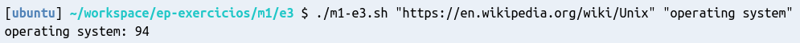

Um shell script pode ser chamado com argumentos. Todos os termos que você escreve depois do nome do
script ficam acessíveis dentro do script através das variáveis especiais $1, $2, etc. São
criadas tantas variáveis especiais quanto necessário, uma para cada argumento.
Por exemplo, se você criar um script chamado meu_script.sh com o conteúdo a seguir:
#!/bin/bash
echo "Primeiro parâmetro:" "$1"
echo "Segundo parâmetro:" "$2"
Em seguida, você pode chamar o script pelo terminal com dois parâmetros da seguinte forma:
# Note que os parâmetros são delimitados automaticamente por espaços em branco.
./meu_script.sh param-1 param-2
E a saída será:
Primeiro parâmetro: param-1
Segundo parâmetro: param-2
Importante: Como os argumentos são delimitados por espaços em branco, se o seu argumento tiver um espaço em branco, é necessário usar aspas em torno do argumento. Por exemplo:
./meu_script.sh "Parâmetro 1" "Parâmetro 2"
Crie um diretório para a resolução deste exercício, como você fez no Exercício 1.
No diretório do exercício (~/workspace/ep-exercicios/m1/e3), crie um arquivo com o nome m1-e3.sh.
Assim como no Exercício 1, este arquivo será um shell script. Por isso, você já pode adicionar o shebang
na primeira linha do arquivo.
Escreva um shell script (sequência de comandos) que baixa um arquivo de uma URL (a URL deve ser passada como primeiro parâmetro do script,
e ficará armazenada na variável especial $1) e imprime o número de ocorrências de um termo qualquer, passado
pelo usuário como segundo parâmetro do script (isto é, o termo de busca estará na variável especial $2). Use a comparação case-insensitive.
Note que esse exercício é apenas uma generalização do exercício anterior, usando parâmetros ao invés de deixar a URL e o termo de busca especificados diretamente no código do script.
Exemplo de execução e saída esperada:

Teste o seu script. Para fazer isso:
Quando você estiver satisfeito com o seu script, utilize a ferramenta ep-cli
para executar a correção do exercício. Se você não se lembrar como fazer isso, pode consultar
as instruções do Exercício 1 ou executar ep-cli --help no terminal.
Quando você tiver finalizado o exercício, utilize a ferramenta ep-cli
para enviar o resultado. Se você não se lembrar como fazer isso, pode consultar
as instruções do Exercício 1 ou executar ep-cli --help no terminal.